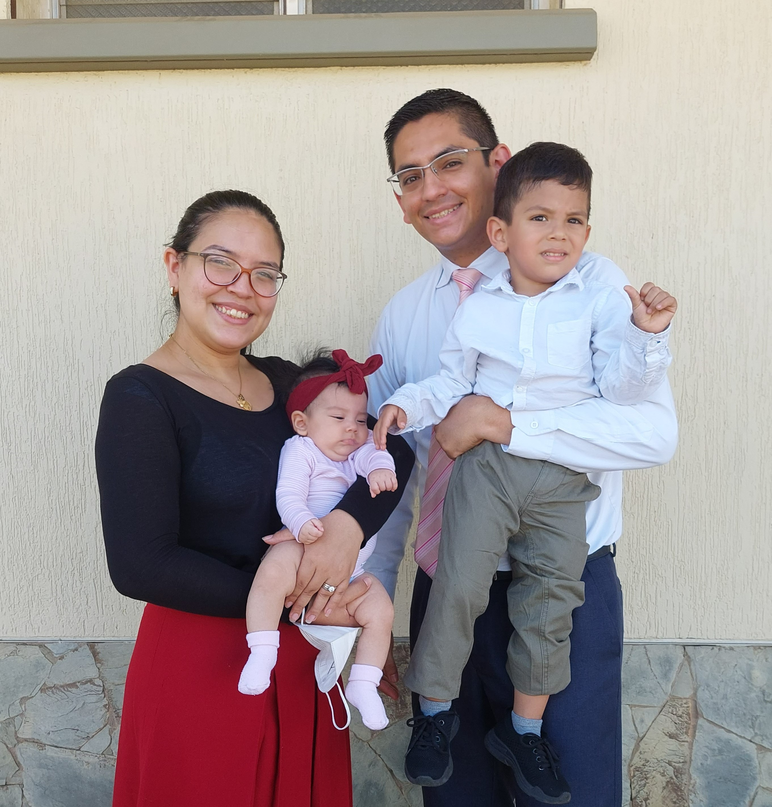

Jorge Gaytan | WDD 130

Hello everyone, my name is Jorge Gaytan, I have been married to Francys for seven years, and we have two wonderful kids. I was born in Merida, Venezuela, I love my country, we have hundreds of natural wonders. Now we live in Germany since 6 months ago. I have been a member of the Church of Jesus Christ of Latter-day Saints since I was 8 years old, now I am 32, and I know that Jesus Christ is my redeemer. I worked in the Caracas Venezuela Temple, as Clerical Leader for 5 years, until six months ago, It was a privilege to be in the house of the Lord every day, I want to improve my work by getting a BS in Software Development, and I am exploring if I have the talent to do it. One thing that i love from BYUI is the level of good istruccion, and that is a blessing for us. In my free time I love exploring nature, cooking "arepas" (a typical dish here) with friends and practicing many sports. In Venezuela we are all like a brother, we trust each other quickly and we do not know what is worth, so write me if you need help or answer any question.